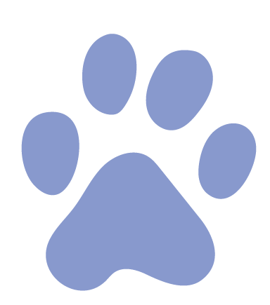
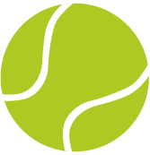
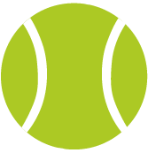
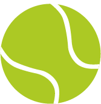
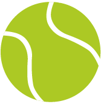

מסלול טיול הר צרור
משך המסלול
6 שעות
אורך המסלול
10 ק"מ
סוג מסלול
מעגלי
עונה מומלצת
סתיו ואביב
המסלול מתאים לכלבים בוגרים אך צעירים, מגודל בינוני עד גדול, נמרצים ובעלי כושר בינוני עד גבוהה.
האם הכלב שלכם רגיש מאוד לחום? מדובר בעיקר בכלבים בעל פרווה מאוד עבה למשל גזע ההסקי
סיברי או לפי היכרות אישית שלכם עם כלבכם.אם כן - המסלול לא בשבילכם.
הכלב שלכם אוהב מים? מעולה!
יש אופציה להתרעננות קלה בגב צרור! אפשר גם לוותר אם הכלב שלכם פחות בעניין.
יש לדאוג שהכלב שלכם:
- מרגיש טוב לפני יציאה מהבית- ישן טוב בלילה
- אכל לפני יציאה מהבית
יש לבדוק את מזג אוויר לפני יציאה מהבית:
- אין לצאת למסלול כאשר יש חשש לשיטפונות. ניתןלבדוק את מזג האוויר באתר השירות המטארולוגי
- בימים גשומים לא ניתן להגיע למנחת המסוקים
לאן נגיע?
מנחת מסוקים - שדה בוקר
נקודת ההתחלה ממוקמת על מנחת המטוסים הישן שסמוך לקיבוץ שדה בוקר.
נתחיל ללכת במסלול הכחול לכיוון צפון על שביל הג'יפים, בהתחלה יהיה לכם פחות מעניין אבל חכו להמשך מבטיחים שישתפר.
אחרי 2 ק"מ תגיעו לפיצול עם השביל האדום כאן בעצם תסתיים הדרך של שביל הג'יפים.
תמשיכו עם השביל הכחול דרומה ישירות להר צרור ובהמשך תגיעו למפגש עם השביל הירוק איתו נטפס להר צרור השולחני לתצפית יפה של בקעת צין.
משם נחזור לשביל הכחול ואיתו נרד בנחל צרור.
כדי להגיע לגב יש לפנות בשביל השקוף.
לאחר מכן לחזור לשביל הכחול שיוביל אותנו חזרה לשביל הג'יפים השחור ואיתו נגיע אל תחילת המסלול - מנחת המסוקים.
אזהרות שחשוב להכיר
נפילה
המסלול בעל הרבה מצוקים חדים והקרקע בנוייה מאבנים קטנות ולא יציבות לכן:- יש לשים לב לכלב ולהיות ערניים כל הזמן.
- לא לתת לכלב להתקרב לקצה.
- לשמור שהכלב היה לצידכם עם רצועה לא ארוכה מידי.
הרעלה
לא מומלץ לתת לכלב לשתות ממיםשאנחנו לא יודעים שהם 100% טובים.
ישנם צמחים שרעילים לכלבים.
כוויות והתייבשות
המסלול נמצא במדבר ולכן יש להתחיל את המסלול בשעות הבוקר המוקדמות 6-8כווויות בכפות רגליים:
במהלך היום הטמפרטורות עולות וכך גם חום הרצפה חשוב לזכור שהכלבים שלנו הולכים יחפים ויכולים לקבל כוויות מאוד קשות במהלך שעות היום החמות.התחלתם את המסלול? מקומות שאסור לפספס:
-

תצפית בפסגת הר צרור
בגובה 540 מ' המשקיפה לעבר בקעת צין. אחלה נקודה לעצור להירגע אחרי תחילת התיפוס לשתות קפה ומים לכלבכם הנאמן. -
גב צרור
בריכה בקוטר 3 מטרים ועומקה כמטר במרכזה.
המאפשר התרעננות לכם ולחברנו הפרוותי. -
עצירה בשדה בוקר
להנות מתצפית עם בריזה שכלבים אוהבים.
חזרתם הביתה? אל תשכחו:
-

לבדוק שהכלב שלכם לא נפצע
בידקו את כל גוף הכלב בעזרת ראייה ומישוש ובידקו שלא נחתך, נפצע או קיבל כוויה. יש להתייחס בעיקר לכווויות וחתכים באזור כפות הרגלים מאבנים חדות.
-

קרציות
לאחר כל יציאה לטבע ולפארק חשוב לראות שאין לכלבים שלכם קרציות שהם מכניסים הביתה.
-

התייבשות
המסלול ברמה בינונית ונמצא במדבר לכן חשוב מאוד להמשיך להשקות את הכלב במים גם אחרי שחזרנו הביתה.
-

האכלה
לאחר כל המאמץ והנסיעה הביתה כולנו כבר רעבים חשוב להחזיר לגוף הכלב אנרגיה להתאושש מהטיול המהנה.